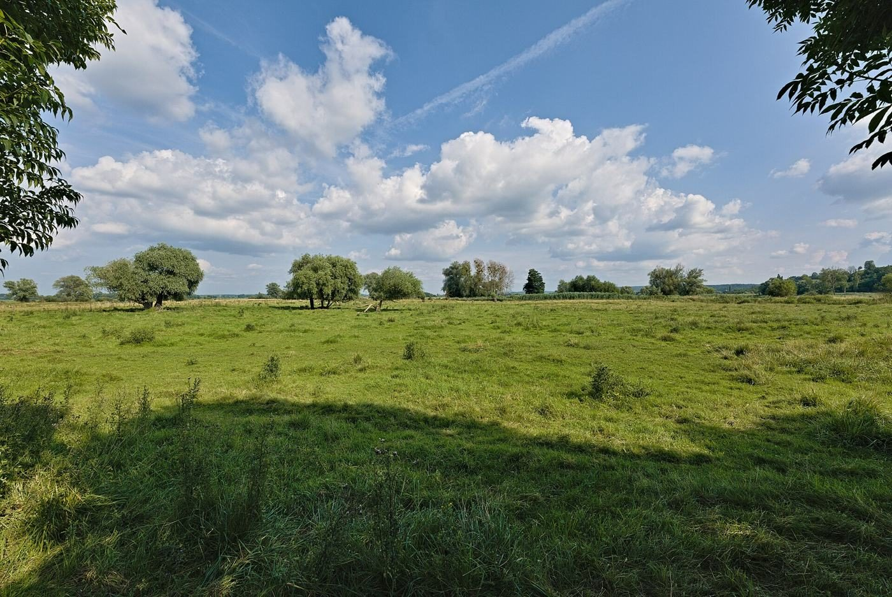
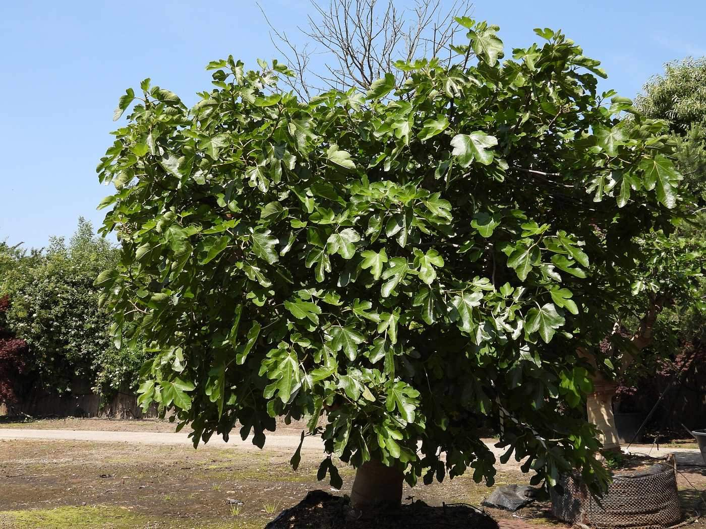

制作側の連想
ドアノッカーの部位を、配置図にしてみる
ドアノッカーの部位を図にしたもので、制作側の連想です。お店の理念・由来とは無関係で、実際の金具の仕様を示すものでもありません。 六つの部位に番号をふり、上の図と並べています。
凡例
六つの部位
- 1取付板扉に固定する、金具全体の土台になる板。ほかの部位はすべてこの板に付いている。
- 2軸受け板の上部に立つ小さな突起。ノッカーを吊るす軸を両側から支える部分。
- 3軸ピン軸受けを横に貫く細い棒。ノッカーが前後に振れるときの支点になる。
- 4ノッカー軸から吊り下がる輪の形の可動部。手で持ち上げて、落とすように使う。
- 5打ち座板の下側にある、ノッカーが当たる丸い受け面。打つ音が出る場所。
- 6固定ねじ取付板を扉に留める、上下二か所のねじ。頭にはドライバーの溝がある。
写真(イメージ)
写真(イメージ)




写真はイメージです。お店のものではありません。
ご案内
お店のこと(確認できたものだけ)
| 所在地 | 〒633-2431 奈良県吉野郡東吉野村小７１６ |
|---|---|
| 電話 | 準備中 |
| 営業時間 | 準備中 |
| 定休日 | 準備中 |
| ご予約 | 準備中 |
| 駐車場 | 準備中 |
| SNS | Instagram @bakery.mugiwara |